第1轮 · 渲染成功 首轮：通过

First composition: six generated coal cutouts, common zero and 0–30% linear height scale, data-bound labels, cyan photographic field
轮次记录 · 该轮绘图源码3个案例、6次独立执行；最多3次生图、6轮完整渲染。每轮图像和源状态保留。首轮与最终由独立AI评估，评分不回传生成器；未做消融。
主通过要求数据完整、文字数值、绑定、几何、主体身份和融合关系全部通过，同时任务正常完成。此表是小样本自动评价。
| 条件 | 首轮通过 | 最终通过 |
|---|---|---|
| 相近数据 | 3/3 | 3/3 |
| 冲突数据 | 3/3 | 3/3 |
查看方式：展开原始设计参考，再比较每例的相近数据与冲突数据；点击图片可查看原尺寸。全部9张逐轮成图都已保留。
共有6次独立生成、12个首轮／最终评价位置；3次生成只有一轮，首轮和最终为同一张图，复用同一评价。评分来自独立AI会话，你可以据此继续人工核查。
书脊案例的数值与量尺同时缩小100倍，图形比例保持不变，检验的是量尺和小数标签更新。
类别从6增到10；单位、0–30量程、100%总和及最小/最大份额保持一致。类别是无序名义类别，不测试时间趋势。
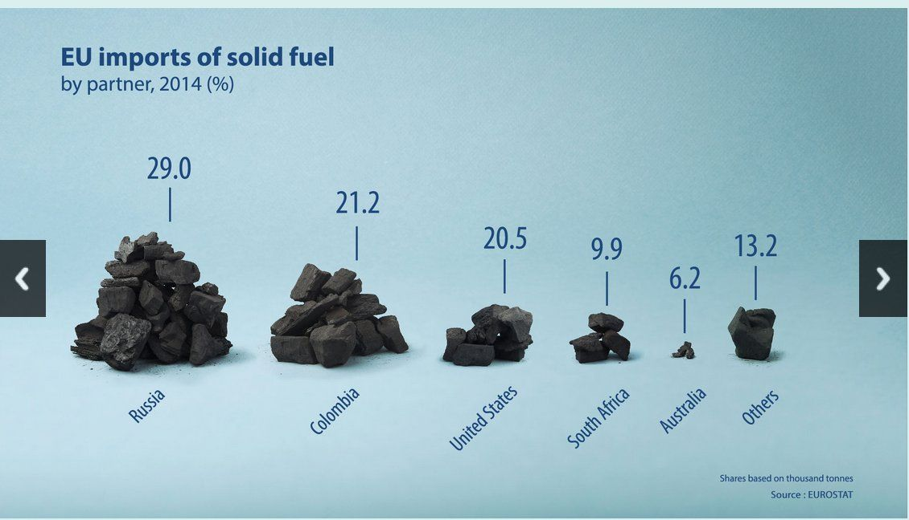
输入值：[28.6, 22.4, 19.7, 10.1, 5.9, 13.3]
First composition: six generated coal cutouts, common zero and 0–30% linear height scale, data-bound labels, cyan photographic field
轮次记录 · 该轮绘图源码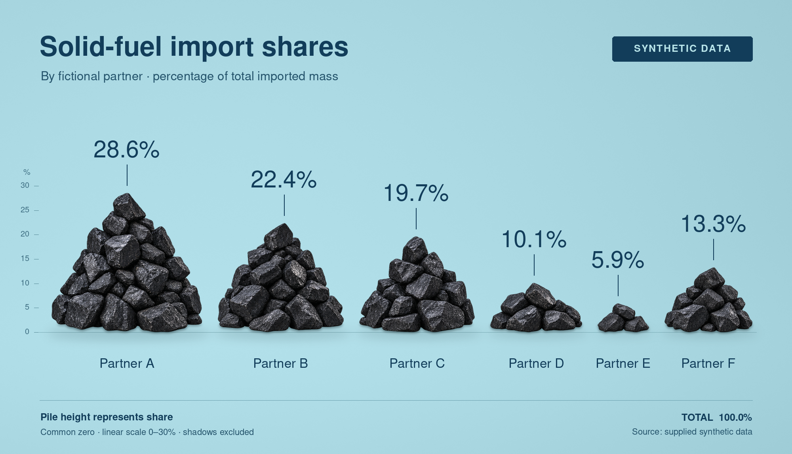
Refine contact shadows to follow actual coal bases; measure final visible coal against the pre-coal ground so shadows and ruler cannot count as body geometry
轮次记录 · 该轮绘图源码输入值：[28.6, 12.0, 11.0, 8.0, 7.0, 6.9, 6.7, 6.5, 5.9, 7.4]
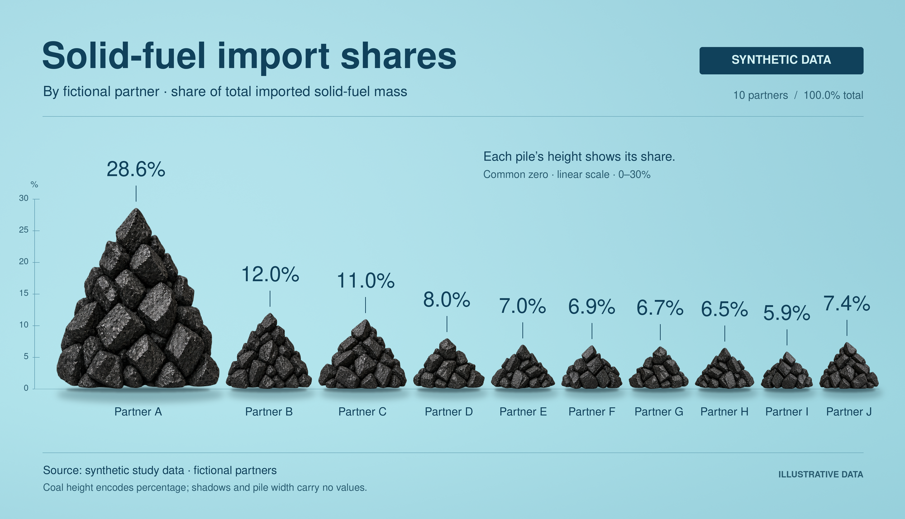
First composition: generated coal heaps on cyan ground, common 0–30% height scale, ten data-bound values and labels
轮次记录 · 该轮绘图源码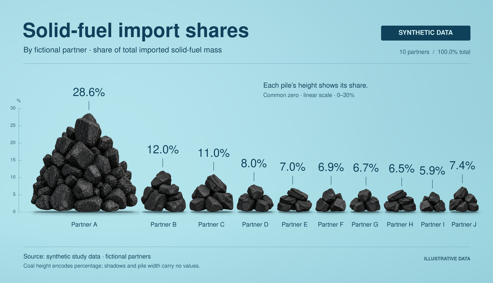
Use irregular matte coal heaps with fewer larger chunks in small piles; tighten shadows to the common contact plane
轮次记录 · 该轮绘图源码11期递增价格反转为递减；类别、单位、量程与全部数值的多重集合保持一致。
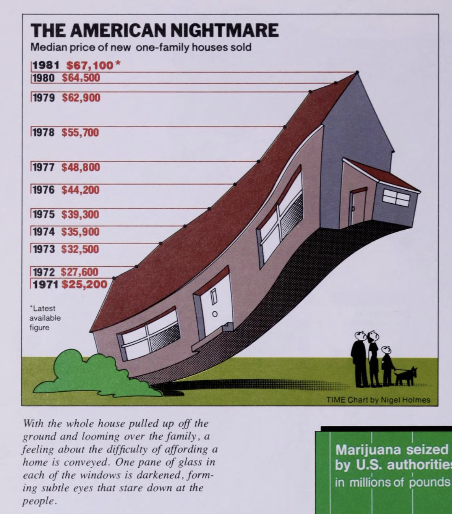
输入值：[26400, 28900, 33100, 36800, 40600, 45300, 49900, 56400, 63400, 65200, 68100]
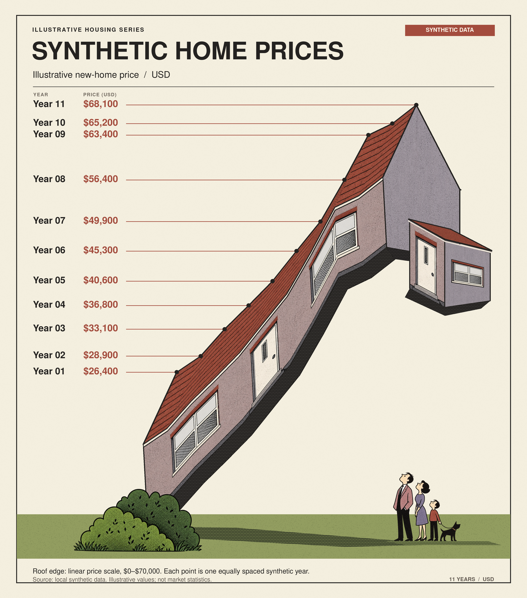
First complete composition: data-bound roof, generated architectural surfaces and scene props
轮次记录 · 该轮绘图源码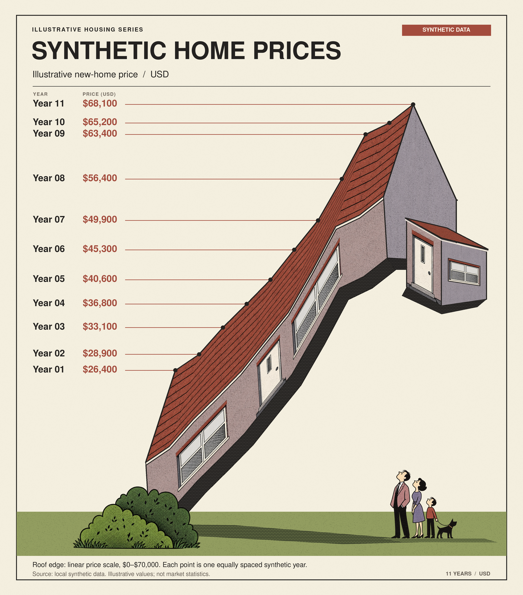
Widen red roof, preserve planar generated windows and door, and increase footer clearance
轮次记录 · 该轮绘图源码输入值：[68100, 65200, 63400, 56400, 49900, 45300, 40600, 36800, 33100, 28900, 26400]
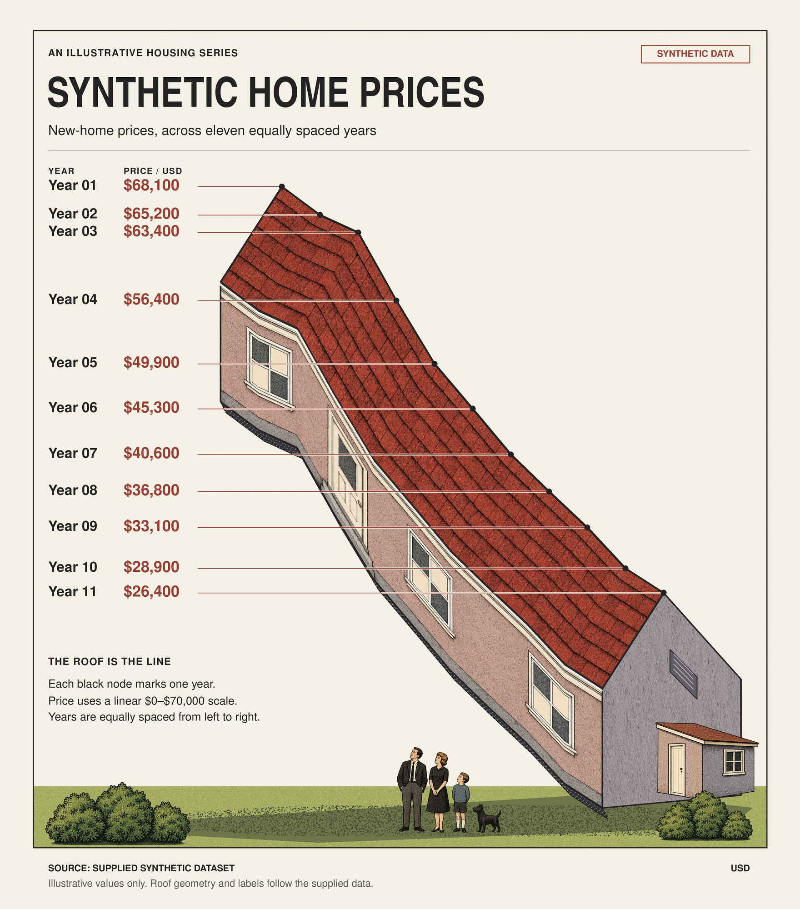
First full composition: generated house surfaces bound to descending data, exact labels, lawn, annex and family
轮次记录 · 该轮绘图源码数值与量尺缩小100倍，单位仍为million copies；类别、排序和归一化几何形状保持一致，测试量尺与小数标签更新。
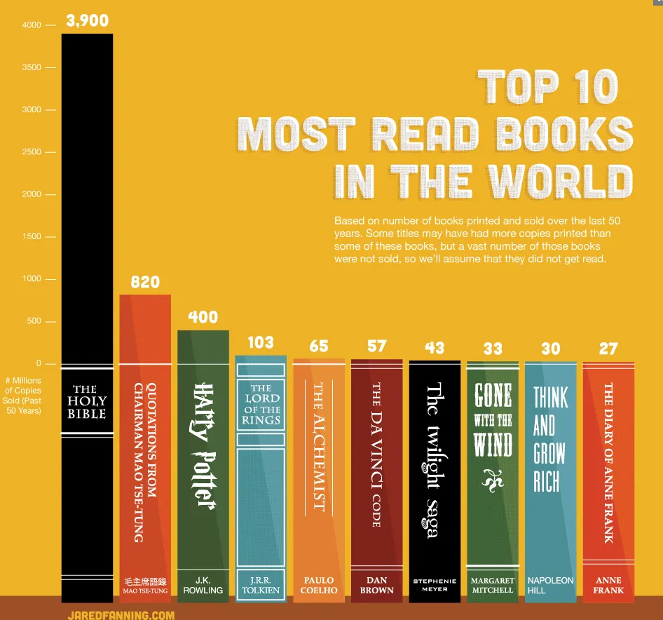
输入值：[3840, 850, 420, 108, 69, 59, 45, 35, 31, 26]
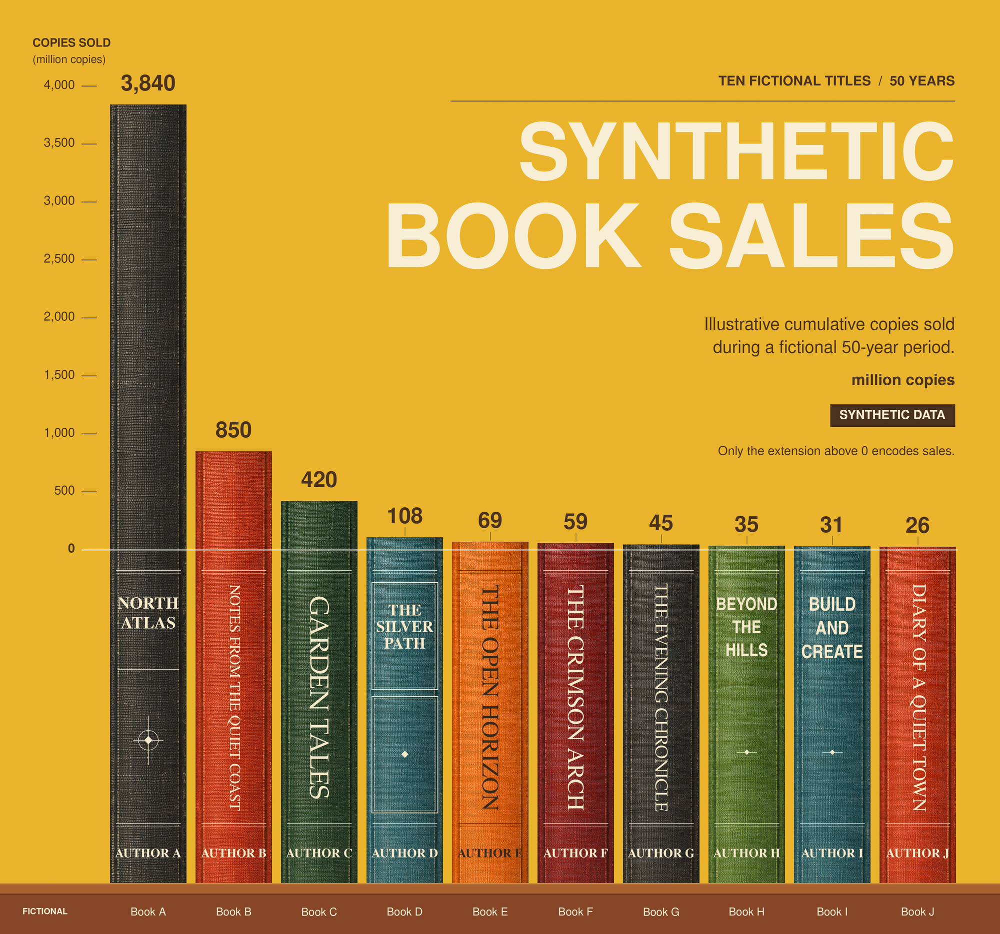
Initial complete chart: generated cloth spines, shared linear zero, exact data labels and local-font typography
轮次记录 · 该轮绘图源码输入值：[38.4, 8.5, 4.2, 1.08, 0.69, 0.59, 0.45, 0.35, 0.31, 0.26]
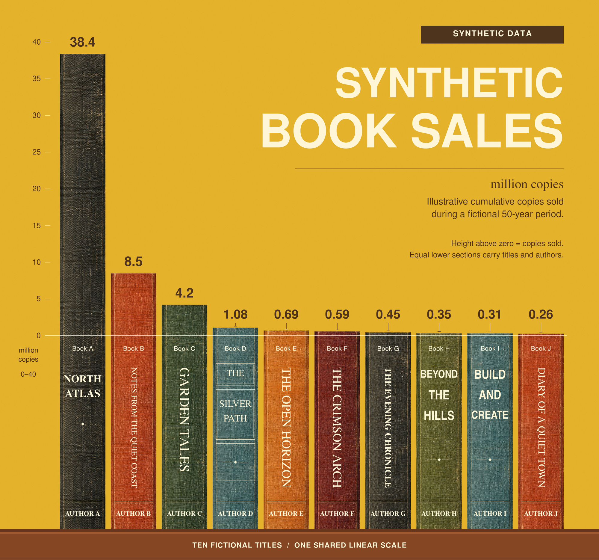
First composition: generated cloth spines, shared 0–40 linear scale, exact labels and common lower book sections
轮次记录 · 该轮绘图源码